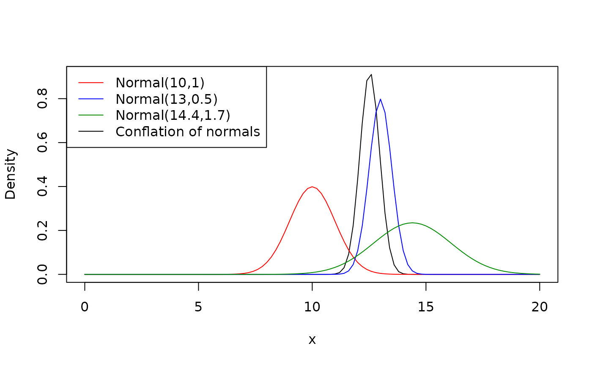

Conflation of distributions
Gustavo A. Ballen and Sandra Reinales
Source:vignettes/conflation.Rmd
conflation.RmdCombining different distributions into a single one is a useful tool for summarising different sources of information. Given a collection of distributions describing the same parameter, we aim at building a general distribution which incorporates information from the individual components. Multiple alternatives are available, and as with -intercept estimation, the problem of summarising a collection of distributions has several possible answers. Hill (2011)1 discussed these methods and proposed the conflation as a better and general way of combining distributions describing the same parameter.
Conflation proves useful when building secondary calibrations where more than two densities are available for the same time event. Suppose that we have a biogeographic event with time , for which three different studies provide three independent densities, for instance, posterior probabilities for a node which corresponds to the biogeographic event. The best summary of these independent pieces of information is a conflation , which can be used as a secondary calibration point for a new divergence time estimation analysis as it is itself a PDF. Suppose that , , and . We can calculate the conflation of these three distributions.
Here, three normals were used to approximate the posterior distribution of a given divergence time, and their conflation is depicted as a black line. It is evident that the conflated distribution shows more resemblance with the component with lowest variance (blue distribution), although incorporating the information coming from all of them. This distribution can in turn be used as a secondary calibration point in a subsequent divergence time estimation study, where a single node calibration must be used for a given node.
The function conflate is used for building a conflation
given arbitrary PDFs available in, that is, any function
dDIST (e.g., dnorm, dexp, etc.).
It uses a constructor function density_fun that helps to
specify the functions without need to calculate any object
beforehand.
# load the package
library(tbea)
# calculate the conflation and plot it
# mind the double quotes which must be used when specifying each distribution
# and the single quotes when specifying the distribution function name
conflate(c("density_fun(x, 'dnorm', mean=10, sd=1)",
"density_fun(x, 'dnorm', mean=13, sd=0.5)",
"density_fun(x, 'dnorm', mean=14.4, sd=1.7)"),
from=0, to=20, n=101, add=FALSE, plot=TRUE)
# plot the individual distributions
curve(density_fun(x, 'dnorm', mean=10, sd=1), add=TRUE, col="red")
curve(density_fun(x, 'dnorm', mean=13, sd=0.5), add=TRUE, col="blue")
curve(density_fun(x, 'dnorm', mean=14.4, sd=1.7), add=TRUE, col="green4")
# legend
legend(x="topleft", lty=1,
legend=c("Normal(10,1)",
"Normal(13,0.5)",
"Normal(14.4,1.7)",
"Conflation of normals"),
col=c("red", "blue", "green4", "black"))
# save the conflation coordinates into an object without plotting
# then we can plot or use the xy values if desired
conflated_normals <- conflate(c("density_fun(x, 'dnorm', mean=0, sd=1)",
"density_fun(x, 'dnorm', mean=3, sd=1)"),
from=-4, to=4, n=101, plot=FALSE)
plot(conflated_normals)Now, we can use the conflated distribution as a secondary calibration point for a new divergence time estimation analysis.
# first, let's calculate the area under the curve,
# must be approximately 1.0 as it is itself a PDF
integrate(approxfun(conflated_normals), subdivisions=10000,
lower=-4, upper=4)## 0.999997 with absolute error < 8.2e-07
# now, use 'quantile_conflation' to calculate quantiles
# for the conflated distribution
q1 <- quantile_conflation(p=0.025, data=conflated_normals,
output="quantile")
q2 <- quantile_conflation(p=0.5, data=conflated_normals,
output="quantile")
q3 <- quantile_conflation(p=0.975, data=conflated_normals,
output="quantile")Finally, we can use the function findParams to find the
combination of parameters given these quantiles, to set the new
calibration point (see function vignette for details).